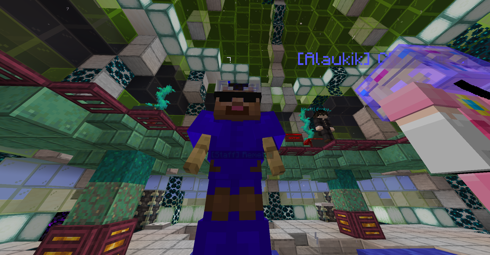
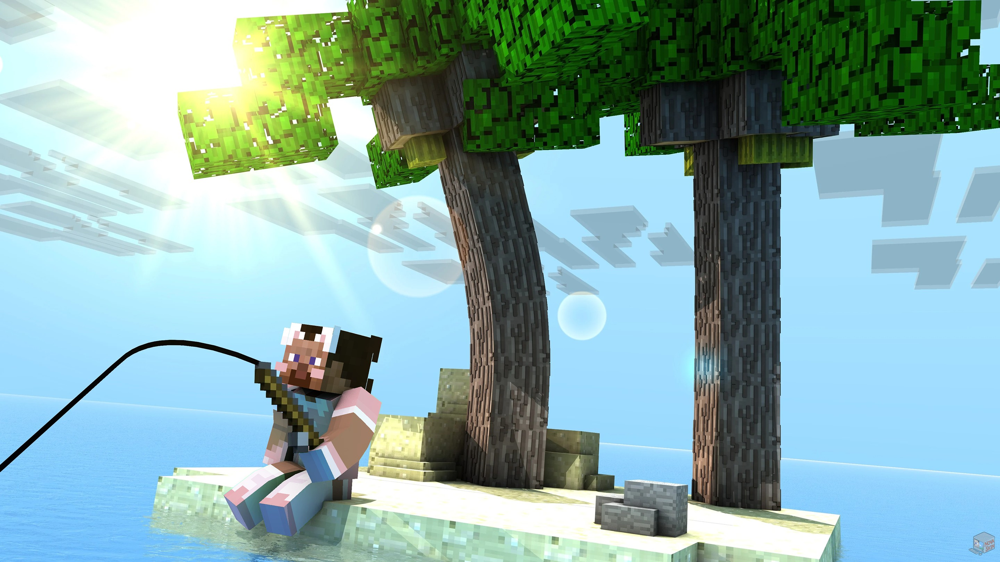
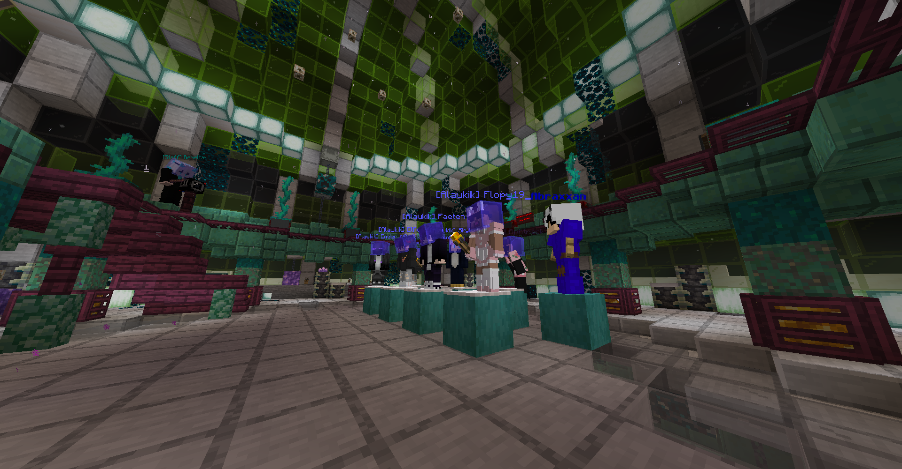
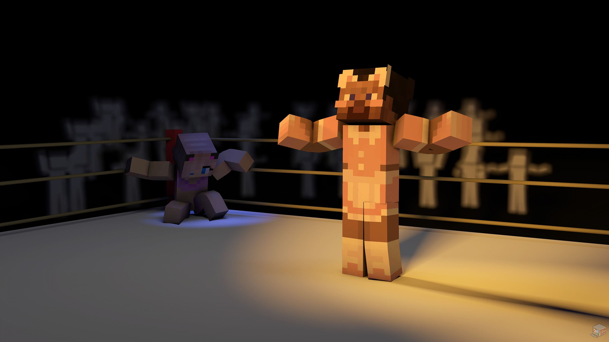
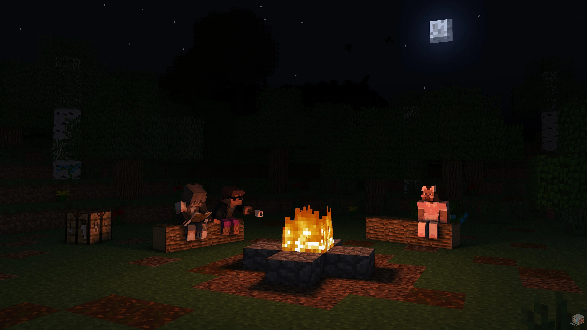

Début discret
Observer, écouter, parler utile et éviter de se faire remarquer pour rien.
Candidature SurvIsland
Capture en épreuve, j'étais à mon prime je crois !
Présentation
Question
Qui es-tu en dehors du jeu ? Que fais-tu dans la vie ? Quels sont tes passe-temps ?
Je m'appelle Theo et je travaille comme développeur dans une boîte spécialisée dans les pièces de moto et de motoculture. En clair, je passe mes journées à chercher pourquoi un truc bloque, à le corriger, puis à découvrir qu'un autre problème attendait juste derrière.
En dehors du boulot, je suis plutôt simple : soirées entre amis, jeux de société, surtout ceux où il faut négocier, bluffer ou trahir proprement, et beaucoup de jeu de rôle. Je fais du JDR depuis environ six ans, comme joueur et comme maître du jeu.
Le JDR m'a appris à improviser, à gérer des groupes pas toujours très stables, à lire les réactions des gens et à garder une info utile pour le bon moment. Mine de rien, ce sont des réflexes qui servent très bien dans un jeu social, et c'est probablement ce qui me ressemble le plus.

Une capture de moi en jeu le jour de mon élimination (Prime du gaming).

Moi avec une canne à pêche. (Vous avez la ref ou pas...)
Retour sur la saison 18
J'ai participé à la saison 18 de SurvIsland, celle des Alliens.
Mon aventure a été courte, surtout à cause de deux absences de suite. C'est frustrant, surtout parce que j'avais l'impression de commencer à trouver ma place au moment où tout s'est arrêté.
Ce qui m'a marqué, c'est que même absent, j'avais encore un peu d'impact sur la direction des votes. La première fois, j'échappe à l'élimination. La deuxième, Clovis sort une idole au bon moment et je saute à sa place.
Il y a aussi l'histoire du fil dans mon inventaire, qui aurait pu servir à fabriquer des cannes à pêche. Disons que j'ai appris ce jour-là qu'un simple bout de ficelle pouvait laisser une trace presque aussi durable qu'une trahison.
Dans mes souvenirs, j'étais assez proche d'Ender et de Nora. Avec Ender, on voyait vite l'intérêt de travailler ensemble. Avec Nora, c'était plus instinctif, on s'est retrouvés un peu mis de côté au départ, donc le lien s'est fait naturellement.
Dans le jeu, j'étais déjà dans une logique assez active. J'avais envie de proposer des directions, de peser sur les premiers votes et d'avoir de l'influence, même sans encore avoir la position idéale pour l'assumer pleinement.
Cette première saison ne résume pas ce que je peux faire, mais elle m'a appris un truc important : prendre le lead trop tôt peut marcher, mais ça peut aussi te mettre direct dans le viseur.
En résumé : un passage bref, mais assez parlant pour me montrer ce que je devais corriger.

Une petite photo des conseils, vu qu'on y allait toutes les semaines, c'était un peu notre deuxième maison.

Représentation de ma confrontation avec Clovis (Du moins dans ma tête).
Ce que je ferais autrement
Avec le recul, ma plus grosse erreur lors de ma première saison, c'était de vouloir exister trop vite.
J'avais envie de jouer, de proposer, d'influencer, de prendre une place tout de suite. Le problème, c'est que dans un jeu comme SurvIsland, être visible trop tôt peut vite devenir un cadeau pour les autres.
Cette fois, je veux surtout mieux gérer mon timing : prendre la température, comprendre les groupes, puis m'installer sans me mettre tout seul dans la lumière.
Les absences laissent forcément un goût d'inachevé. J'ai surtout l'impression d'avoir quitté l'aventure avant d'avoir pu montrer ce que je valais vraiment dans la durée. Et pour être totalement honnête, la deuxième absence était la ZLAN, donc mon élimination s'est aussi jouée pendant que j'étais IRL ailleurs.
Si je reviens, le but est simple : être là, tenir dans la durée, et jouer avec plus de justesse que la première fois.
Observer, écouter, parler utile et éviter de se faire remarquer pour rien.
Comprendre qui parle à qui, avec qui il vaut mieux avancer, et qui va trop vite.
Quand il faudra agir, le faire proprement et sans prévenir tout le monde.

Moi avec mes super potes (Devinez qui parmi les trois n'est pas allé en final, attention c'est dur)

Photo IRL prise à la ZLAN 2024 le jour de mon élimination, pendant que la saison avançait sans moi.
Façon de jouer
Je pense pouvoir être social, oui, mais pas dans le sens de celui qui parle à tout le monde toute la journée. Je suis plus à l'aise dans une approche calme, progressive, où chaque lien a une vraie utilité.
SurvIsland reste un jeu où l'isolement se paye vite. Donc je sais qu'il faudra créer des liens, discuter, écouter et comprendre ce qui se passe. Juste, je ne compte pas confondre présence sociale et bruit permanent.
Mon point fort, c'est surtout l'analyse. J'essaie de comprendre ce que les gens veulent, ce qu'ils cachent, ce qu'ils laissent échapper et à quel moment ils deviennent lisibles.
Sur les épreuves, mon objectif est simple : faire mon mieux. La première fois, j'avais été surpris d'être plutôt utile, donc je repars avec plus de confiance qu'au début.
Côté stratégie, je pense avoir les bases, mais un cast change tout. La vraie valeur d'un joueur se voit surtout dans sa capacité à s'adapter à la saison qu'il a en face.
Au début du jeu, je pense consacrer environ 60 % de mon attention à la recherche d'avantages. C'est assez pour ne pas laisser passer une opportunité utile, mais pas au point de devenir suspect ou de ne plus exister socialement.
Si j'en trouve un, je ne veux ni le griller trop tôt ni le montrer pour rien. Un avantage doit avoir un vrai impact, et sa valeur ne vient pas seulement de son effet : elle vient aussi de la pression psychologique qu'il crée si je sais le garder discret.
Mon idée serait donc simple : le protéger, attendre le bon moment, puis m'en servir avec un vrai impact.
Globalement, je veux proposer un jeu plus propre, plus stable, et surtout plus suivi dans la durée.
Perception
Je pense qu'une bonne partie des joueurs ne me connaîtra pas vraiment. Pour eux, je serai surtout un point d'interrogation, donc probablement ni clairement sous-estimé ni clairement surestimé au premier regard.
Ceux qui me connaissent un peu mieux savent en revanche que j'aime lire les dynamiques sociales et que je peux être plus calculateur qu'il n'y paraît. Eux auront sans doute une estimation plus juste de ce que je peux représenter.
Mon vrai point faible en entrant dans l'aventure, c'est ma tendance à vouloir prendre de la place trop vite pour ne pas être le nom facile du premier vote. C'est un réflexe que je connais, donc l'idée serait plutôt de me greffer à quelqu'un qui prend naturellement la lumière, le temps de lire calmement la pièce.
Si vous pensez à me recaster, j'imagine que c'est justement parce que ma première saison était trop courte pour être vraiment jugée. C'est aussi comme ça que je la vois.
Je ne vais pas promettre d'être le candidat le plus rassurant de la saison. En revanche, je peux promettre de m'impliquer, de m'adapter au cast et de produire du jeu qui vaut vraiment le coup d'être suivi.
Pour le record ou le stream, oui, c'est envisageable. Si je record, je garderai les vidéos, même si je sors tôt. Le skin, lui, ne bougera pas, et je n'ai pas de contrainte particulière qui me désavantagerait dans les épreuves.
Citation
"Je suis investi d'un glorieux destin."